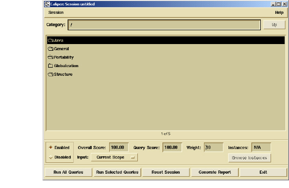

Performing a Quality Analysis
To start a Caliper session, Select Tools > Caliper. This begins a new, blank Caliper session. During your session, you can run queries, examine results, view individual instances, flag hits, and group results for tracking purposes. More information on these activities is presented in the books that follow.
Sessions can be stored and accessed through the Session menu. This enables you to access previously generated Caliper data or retrieve information about grouped or flagged hits that you recorded in an earlier session. For more information, see Caliper Sessions.

Caliper has two notebook pages: Quality Filters and Output. The Quality Filters notebook page allows you to run filters, view quality scores, and generate QARs. If a query fails during processing, Caliper displays error information on the Output page.
You can run Caliper’s quality filter sets on projects and files. Filter sets (at any level) can contain subsets and queries. When you double-click a filter set, you see all of the subsets and queries contained in that set.
The current filter set appears in the Filter Set box. To navigate to a higher-level set, click the Up button.
Note: The list of available filter sets and queries is determined by a mechanism called the task file. The task file contains the default list of filter lists, queries, and files they are run against.
Related Topics